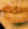

As some day it may happen that a victim must be found
I've got a little list – I've got a little list
Of society offenders who might well be underground,
And who never would be missed
Who never would be missed!
— W. S. Gilbert (1836–1911), The Mikado
 Listing objects tidily in a grammatical sentence is more difficult than it seems, especially when taking plurals and groups of similar objects into account. Here, for instance, is a list of 23 items printed by a room description in the demonstration game ‘List Property’:
You can see a plastic fork, knife and spoon, three hats (a fez, a Panama and a sombrero), the letters X, Y, Z, P, Q and R from a Scrabble set, Punch magazine, a recent issue of the Spectator, a die and eight coins (four silver, one bronze and three gold) here.
Fortunately, the library's list-maker is available to the public by calling:
WriteListFrom(object, style);
where the list will start from the given object and
go along its siblings. Thus, to list all the objects inside X,
list from child(X). What the list looks like depends on
a “style” made by adding up some of the following:
ALWAYS_BIT |
Always recurse downwards |
CONCEAL_BIT |
Misses out concealed or scenery objects |
DEFART_BIT |
Uses the definite article in list |
ENGLISH_BIT |
English sentence style, with commas and ‘and’ |
FULLINV_BIT |
Gives full inventory entry for each object |
INDENT_BIT |
Indents each entry according to depth |
ISARE_BIT |
Prints “ is ” or “ are ” before list |
NEWLINE_BIT |
Prints new-line after each entry |
NOARTICLE_BIT |
Prints no articles, definite or indefinite |
PARTINV_BIT |
Only brief inventory information after entry |
RECURSE_BIT |
Recurses downwards with usual rules |
TERSE_BIT |
More terse English style |
WORKFLAG_BIT |
At top level (only), only lists objects which have
the workflag attribute |
Recursing downwards means that if an object is listed,
then its children are also listed, and so on for their children.
The “usual rules” of RECURSE_BIT are that
children are only listed if the parent is transparent,
or a supporter, or a container which is
open – which is the definition of
“see-through” used throughout the Inform library. “Full
inventory information” means listing objects exactly as if in
an inventory, according to the rigmarole described in
§26. “Brief inventory information”
means listing as if in a room description: that is, noting whether objects
are open, closed, empty or providing light (except that light is
only mentioned when in a room which is normally dark).
The best way to decide which bits to set is to experiment. For example, a ‘tall’ inventory is produced by:
WriteListFrom(child(player),
FULLINV_BIT + INDENT_BIT + NEWLINE_BIT + RECURSE_BIT);
and a ‘wide’ one by:
WriteListFrom(child(player),
FULLINV_BIT + ENGLISH_BIT + RECURSE_BIT);
which produce effects like:
>inventory tall
You are carrying:
a bag (which is open)
three gold coins
two silver coins
a bronze coin
four featureless white cubes
a magic burin
a spell book
>inventory wide
You are carrying a bag (which is open), inside which are three gold coins,
two silver coins and a bronze coin, four featureless white cubes, a
magic burin and a spell book.
except that the “You are carrying” part is not done by the list-maker, and nor is the final full stop in the second example.
▲
The workflag is an attribute which the library scribbles
over from time to time as temporary storage, but you can use it for
short periods with care. In this case it makes it possible to specify
any reasonable list.
▲▲
WORKFLAG_BIT and CONCEAL_BIT specify
conflicting rules. If they're both given, then what happens is: at
the top level, but not below, everything with workflag is
included; on lower levels, but not at the top, everything without
concealed or scenery is included.
•
EXERCISE 66
Write a DoubleInvSub action routine to produce an inventory
like so:
You are carrying four featureless white cubes, a magic burin and a spell book. In addition, you are wearing a purple cloak and a miner's helmet.
· · · · ·
Lists are shorter, neater and more elegantly phrased
if similar objects are grouped together. For instance, keys, books
and torch batteries are all grouped together in lists printed by the
game ‘Curses’. To achieve this, the objects belonging to
such a group (all the keys for instance) provide a common value of
the property list_together. If this value is a number
between 1 and 1000, the library will unobtrusively group the objects
with that value together so that they appear consecutively in any
list. For instance ‘Curses’ includes the following
definitions:
Constant KEY_GROUP = 1;
...
Object -> -> brass_key "small brass key"
with ...
list_together KEY_GROUP;
and similarly for the other keys. Alternatively, instead
of being a small number the common value can be a string such as
"foodstuffs". If so, then it must either
be given in a class definition or else as a constant, like so:
Constant FOOD_GROUP = "foodstuffs";
(In particular, the actual text should only be written
out in one place in the source code. Otherwise two or more different
strings will be made, which just happen to have the same text as each
other, and Inform will consider these to be different values of
list_together.) Lists will then cite, for instance,
three foodstuffs (a scarlet fish, some lembas wafer and an onion)
in running text, or
three foodstuffs:
a scarlet fish
some lembas wafer
an onion
in indented lists. This only happens when two or
more are gathered together. Finally, the common value of list_together
can be a routine, such as:
list_together [;
if (inventory_stage == 1) {
print "heaps of food, notably";
if (c_style & INDENT_BIT == 0) print " ";
else print " --^";
} else if (c_style & INDENT_BIT == 0)
print " (which only reminds you how hungry you are)";
],
Typically this might be part of a class definition from
which all the objects in question inherit. Any list_together
routine will be called twice: once, with inventory_stage
set to 1, as a preamble to the list of items, and once (with 2) to
print any postscript required. It is allowed to change c_style,
the current list style, without needing to restore the old value and
may, by returning true from stage 1, signal the list-maker
not to print a list at all. The above example would give a conversational
sentence-like list as follows:
heaps of food, notably a scarlet fish, some lembas wafer and an onion (which only reminds you how hungry you are)
and would also look suitable in sober tall-inventory-like columns:
heaps of food, notably --
a scarlet fish
some lembas wafer
an onion
▲
A list_together routine has the opportunity to look through
the objects which are about to be listed together, by looking at some
of the list-maker's variables. parser_one holds the first
object in the group and parser_two holds the depth of
recursion in the list, which might be needed to keep the indentation
straight. Applying x = NextEntry(x,parser_two) will move
x on from one object to the next in the group being
listed.
▲
The library variable listing_together is set to the first
object of a group being listed, when a group is being listed, or to
nothing the rest of the time. This is useful because
an object's short_name routine might need to behave
differently during a grouped listing to the rest of the time.
•▲
EXERCISE 67
Implement the Scrabble pieces from the example list above.
•▲▲
EXERCISE 68
Implement the three denominations of coin.
•▲▲
EXERCISE 69
Implement the I Ching in the form of six coins, three gold (goat, deer
and chicken), three silver (robin, snake and bison) which can be
thrown to reveal gold and silver trigrams.
•▲▲
EXERCISE 70
Design a class called AlphaSorted, members of which are always
listed in alphabetical order. Although this could be done
with list_together, this exercise is here to draw the
reader's attention to an ugly but sometimes useful alternative. The
only actions likely to produce lists are Look, Search,
Open and Inv: so react to these actions by
rearranging the object tree into alphabetical order before the
list-writer gets going.
•
REFERENCES
A good example of WriteListFrom in action is the definition
of CarryingClass from the example game ‘The
Thief’, by Gareth Rees. This alters the examine description of
a character by appending a list of what that person is carrying and
wearing.
•Andreas Hoppler has written an
alternative list-writing library extension called "Lister.h",
which defines a class Lister so that designers can customise
their own listing engines for different purposes in a single game.
•Anson Turner's example program
"52.inf" models a deck of cards, and an extensive
list_together sorts out hands of cards.